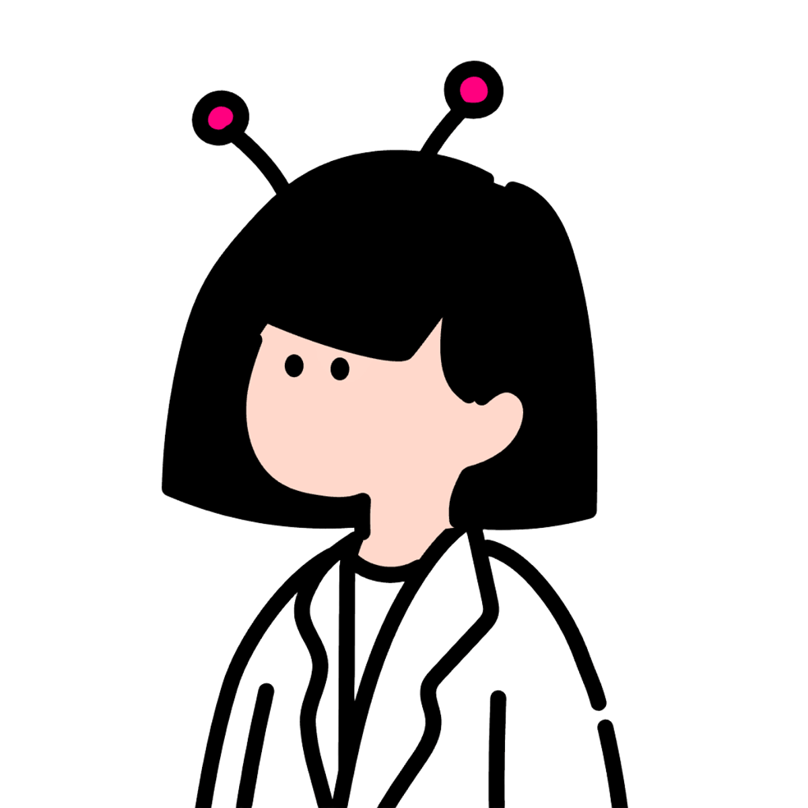

396 FOLIO
Design & Programming & Art & Writing

手塚 桃子 TEZUKA MOMOKO
『確かなロジック、時間を愛でる感性』
10年以上のエンジニアキャリアで培った緻密なロジックを土台に、デザインとアートの領域を横断して活動しています。生み出した「余白」を美しく整え、移ろう時を慈しむ表現を追求しています。
Stay tuned for upcoming news and project highlights.
X
Loading latest thoughts...
Check out my latest artworks, illustrations, and creative moments on Instagram.